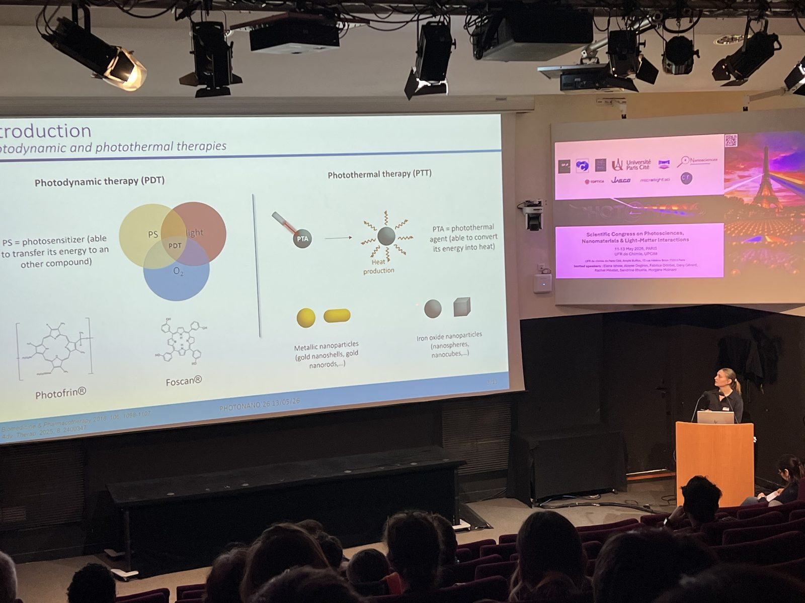
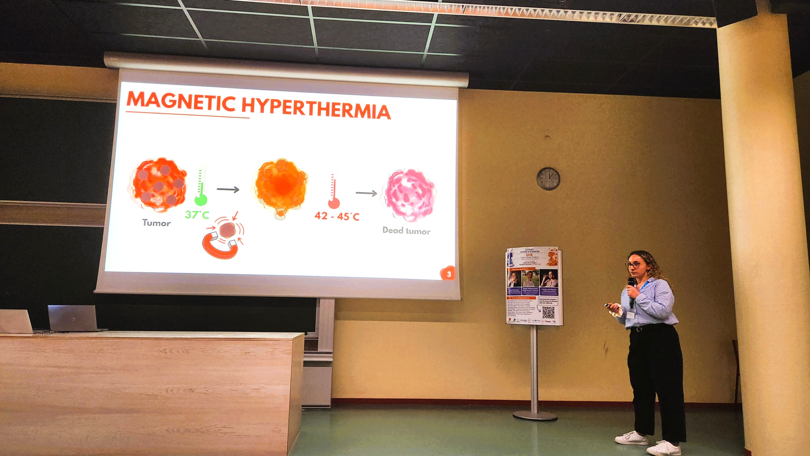

Luminophore and Magnetic Multicore Nanoassemblies for Dual-Mode MRI and Fluorescence Imaging
Lartigue, L.; Coupeau, M.; Lesault, M.
Chemistry · Magnetism · Nanomedicine
NanoBioMat explores magnetic iron oxide nanoparticles and nanoassemblies at the interface of chemistry, physical chemistry and biomedicine.
Explore how particle structure and organization relate to magnetic properties and biological interfaces, through our research, techniques and published work.
Research led by Lénaïc Lartigue at CEISAM UMR 6230, Nantes Université.

Research directions
Published work
Lartigue, L.; Coupeau, M.; Lesault, M.
Lartigue, L.; Alloyeau, D.; Kolosnjaj-Tabi, J.; et al.
Lartigue, L.; Hugounenq, P.; Alloyeau, D.; et al.
Life of the group

A presentation of her doctoral research in Paris.

A presentation of her doctoral research in Angers.